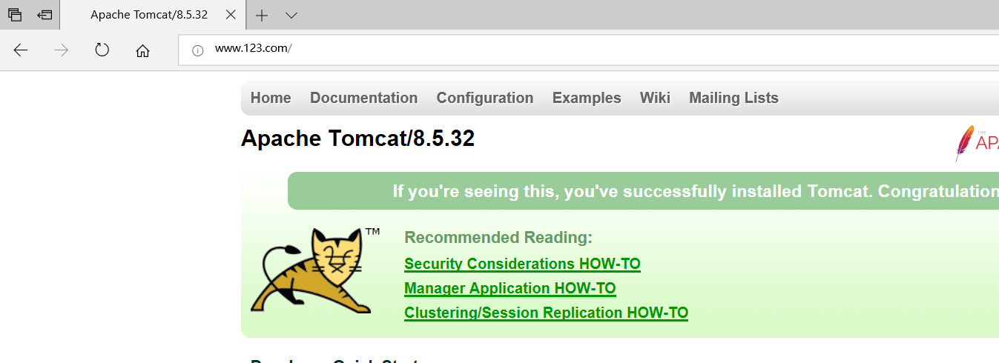

Nginx 服务器的反向代理服务是其最常用的重要功能，由反向代理服务也可以衍生出很多与此相关的 Nginx 服务器重要功能，比如后面会介绍的负载均衡。本篇博客我们会先介绍 Nginx 的反向代理，当然在了解反向代理之前，我们需要先知道什么是代理以及什么是正向代理
代理
在Java设计模式中，代理模式是这样定义的：给某个对象提供一个代理对象，并由代理对象控制原对象的引用。
可能大家不太明白这句话，在举一个现实生活中的例子：比如我们要买一间二手房，虽然我们可以自己去找房源，但是这太花费时间精力了，而且房屋质量检测以及房屋过户等一系列手续也都得我们去办，再说现在这个社会，等我们找到房源，说不定房子都已经涨价了，那么怎么办呢？最简单快捷的方法就是找二手房中介公司（为什么？别人那里房源多啊），于是我们就委托中介公司来给我找合适的房子，以及后续的质量检测过户等操作，我们只需要选好自己想要的房子，然后交钱就行了。
代理简单来说，就是如果我们想做什么，但又不想直接去做，那么这时候就找另外一个人帮我们去做。那么这个例子里面的中介公司就是给我们做代理服务的，我们委托中介公司帮我们找房子。
Nginx 主要能够代理如下几种协议，其中用到的最多的就是做Http代理服务器

正向代理
弄清楚什么是代理了，那么什么又是正向代理呢？
这里我再举一个例子：大家都知道，现在国内是访问不了 Google的，那么怎么才能访问 Google呢？我们又想，美国人不是能访问 Google吗（这不废话，Google就是美国的），如果我们电脑的对外公网 IP 地址能变成美国的 IP 地址，那不就可以访问 Google了。你很聪明，VPN 就是这样产生的。我们在访问 Google 时，先连上 VPN 服务器将我们的 IP 地址变成美国的 IP 地址，然后就可以顺利的访问了。
这里的 VPN 就是做正向代理的。正向代理服务器位于客户端和服务器之间，为了向服务器获取数据，客户端要向代理服务器发送一个请求，并指定目标服务器，代理服务器将目标服务器返回的数据转交给客户端。这里客户端是要进行一些正向代理的设置的。
PS：这里介绍一下什么是 VPN，VPN 通俗的讲就是一种中转服务，当我们电脑接入 VPN 后，我们对外 IP 地址就会变成 VPN 服务器的 公网 IP，我们请求或接受任何数据都会通过这个VPN 服务器然后传入到我们本机。这样做有什么好处呢？比如 VPN 游戏加速方面的原理，我们要玩网通区的 LOL，但是本机接入的是电信的宽带，玩网通区的会比较卡，这时候就利用 VPN 将电信网络变为网通网络，然后在玩网通区的LOL就不会卡了（注意：VPN 是不能增加带宽的，不要以为不卡了是因为网速提升了）。
可能听到这里大家还是很抽象，没关系，和下面的反向代理对比理解就简单了。
反向代理
反向代理和正向代理的区别就是：正向代理代理客户端，反向代理代理服务器。
反向代理，其实客户端对代理是无感知的，因为客户端不需要任何配置就可以访问，我们只需要将请求发送到反向代理服务器，由反向代理服务器去选择目标服务器获取数据后，在返回给客户端，此时反向代理服务器和目标服务器对外就是一个服务器，暴露的是代理服务器地址，隐藏了真实服务器IP地址。
下面我们通过两张图来对比正向代理和方向代理：
![1120165-20180730224512924-952923331.png]*(1120165-20180730224512924-952923331.png)
理解这两种代理的关键在于代理服务器所代理的对象是什么，正向代理代理的是客户端，我们需要在客户端进行一些代理的设置。而反向代理代理的是服务器，作为客户端的我们是无法感知到服务器的真实存在的。
总结起来还是一句话：正向代理代理客户端，反向代理代理服务器。
Nginx 反向代理
范例：使用 nginx 反向代理 www.123.com 直接跳转到127.0.0.1:8080
①、启动一个 tomcat，浏览器地址栏输入 127.0.0.1:8080，出现如下界面

②、通过修改本地 host 文件，将 www.123.com 映射到 127.0.0.1
配置完成之后，我们便可以通过 www.123.com:8080 访问到第一步出现的 Tomcat初始界面。
那么如何只需要输入 www.123.com 便可以跳转到 Tomcat初始界面呢？便用到 nginx的反向代理。
③、在 nginx.conf 配置文件中增加如下配置：
|
|
如上配置，我们监听80端口，访问域名为www.123.com，不加端口号时默认为80端口，故访问该域名时会跳转到127.0.0.1:8080路径上。
我们在浏览器端输入 www.123.com 结果如下：

④、总结
其实这里更贴切的说是通过nginx代理端口，原先访问的是8080端口，通过nginx代理之后，通过80端口就可以访问了。
Nginx 反向代理相关指令介绍
listen
该指令用于配置网络监听。主要有如下三种配置语法结构：
一、配置监听的IP地址
二、配置监听端口
三、配置 UNIX Domain Socket
上面的配置看似比较复杂，其实使用起来是比较简单的：
|
|
下面分别解释每个选项的具体含义：
- address:IP地址，如果是 IPV6地址，需要使用中括号[] 括起来，比如[fe80::1]等。
- port:端口号，如果只定义了IP地址，没有定义端口号，那么就使用80端口。
- path:socket文件路径，如 var/run/nginx.sock等。
- default_server:标识符，将此虚拟主机设置为 address:port 的默认主机。（在 nginx-0.8.21 之前使用的是 default 指令）
- setfib=number:Nginx-0.8.44 中使用这个变量监听 socket 关联路由表，目前只对 FreeBSD 起作用，不常用。
- backlog=number:设置监听函数listen()最多允许多少网络连接同时处于挂起状态，在 FreeBSD 中默认为 -1,其他平台默认为511.
- rcvbuf=size:设置监听socket接收缓存区大小。
- sndbuf=size:设置监听socket发送缓存区大小。
- deferred:标识符，将accept()设置为Deferred模式。
- accept_filter=filter:设置监听端口对所有请求进行过滤，被过滤的内容不能被接收和处理，本指令只在 FreeBSD 和 NetBSD 5.0+ 平台下有效。filter 可以设置为 dataready 或 httpready 。
- bind:标识符，使用独立的bind() 处理此address:port，一般情况下，对于端口相同而IP地址不同的多个连接，Nginx 服务器将只使用一个监听指令，并使用 bind() 处理端口相同的所有连接。
- ssl:标识符，设置会话连接使用 SSL模式进行，此标识符和Nginx服务器提供的 HTTPS 服务有关。
server_name
该指令用于虚拟主机的配置。通常分为以下两种：
基于名称的虚拟主机配置
语法格式如下：
一、对于name 来说，可以只有一个名称，也可以有多个名称，中间用空格隔开。而每个名字由两段或者三段组成，每段之间用“.”隔开。
①、准确匹配 server_name
②、通配符在开始时匹配 server_name 成功
③、通配符在结尾时匹配 server_name 成功
④、正则表达式匹配 server_name 成功
server_name 192.168.1.1
location [ = | ~ | ~* | ^~] uri {
}
proxy_pass URL;
proxy_pass http://www.123.com/uri
index filename …;
index index.html index.jsp;
```
通常该指令有两个作用：第一个是用户在请求访问网站时，请求地址可以不写首页名称；第二个是可以对一个请求，根据请求内容而设置不同的首页。